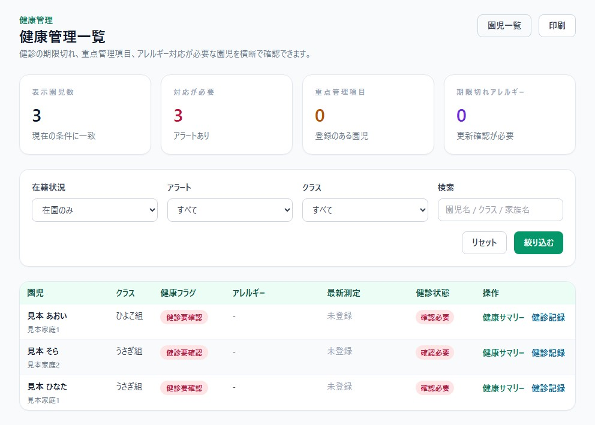
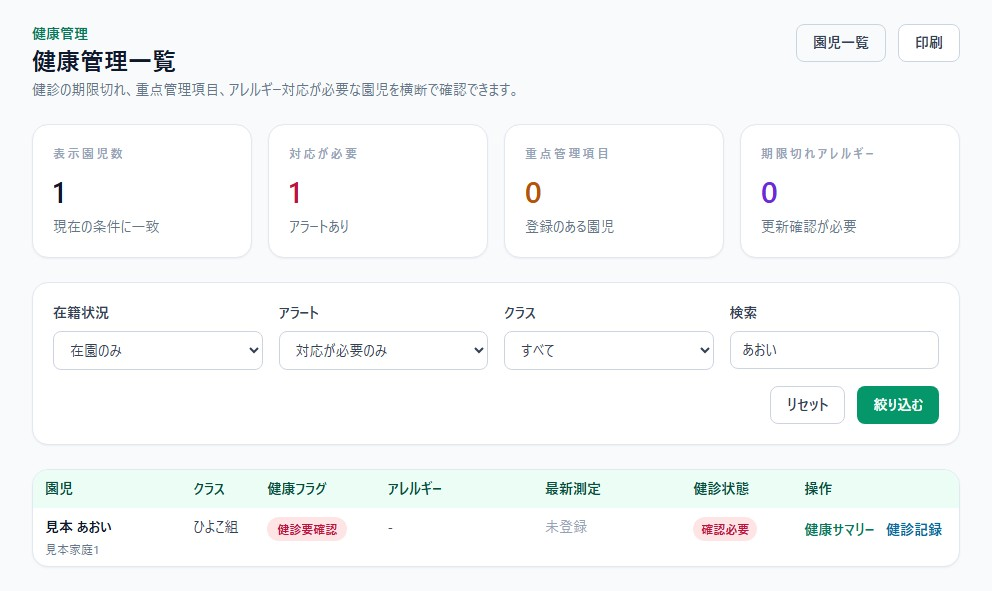
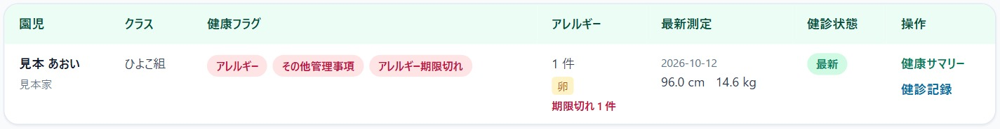
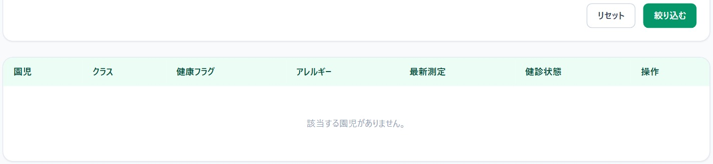

健康管理で園児を探す
クラスの健康情報を見たいときや、記録を確かめたい園児を探すときに使います。
2026年11月23日更新。画面は架空の園児の記録です。画像を押すと大きく見られます。
1健康管理一覧を開く
職員メニューの「健康管理」を押します。最初は在園している園児が表示されます。
上の数字は、今の条件で表示している園児の人数です。「対応が必要」は、健診の記録や期限などに確認項目がある園児の人数です。

2クラスや名前で絞り込む
「クラス」を選ぶか、「検索」に園児の名前を入れて「絞り込む」を押します。家族名やクラス名でも探せます。
確認項目がある園児だけを見るときは、「アラート」で「対応が必要のみ」を選びます。卒園・退園した園児を探すときは「在籍状況」を変えます。

3園児の行を見て、次の画面を選ぶ
園児の名前とクラスを確かめます。「健康フラグ」には確認したい項目が並びます。アレルギーや園児の情報をまとめて見るには、その行の「健康サマリー」を押します。
身長・体重の記録や訂正に進むときは、同じ行の「健診記録」を押します。スマートフォンなどの狭い画面では、園児ごとの情報の下に「操作」が表示されます。

身長と体重を別々の日に記録したときは、「健康サマリー」を開き、それぞれの数字の下の日付を確かめます。
4名前が見つからないとき
「該当する園児がありません。」と出たら、「リセット」を押します。在園のみの一覧に戻るので、必要に応じて在籍状況を選び直すか、名前の一部で探します。
